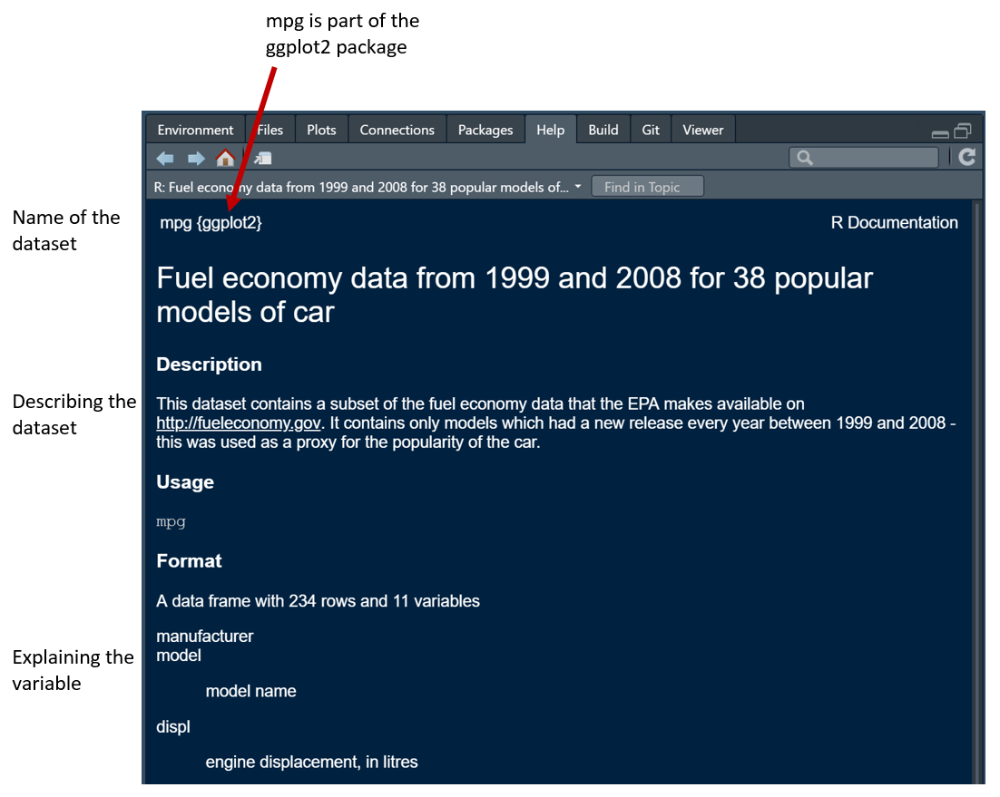
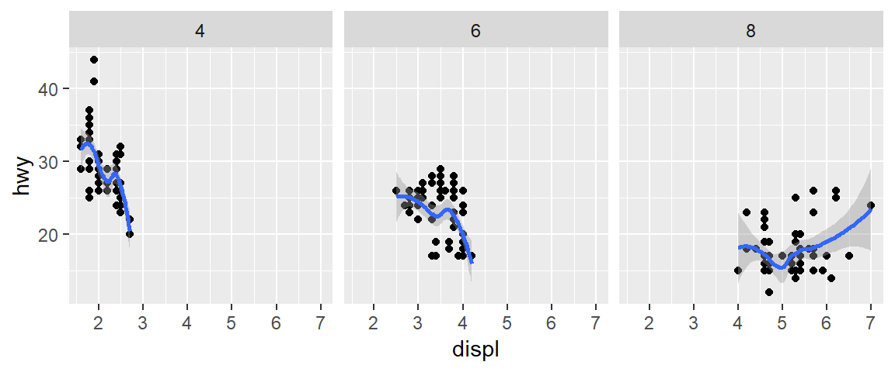
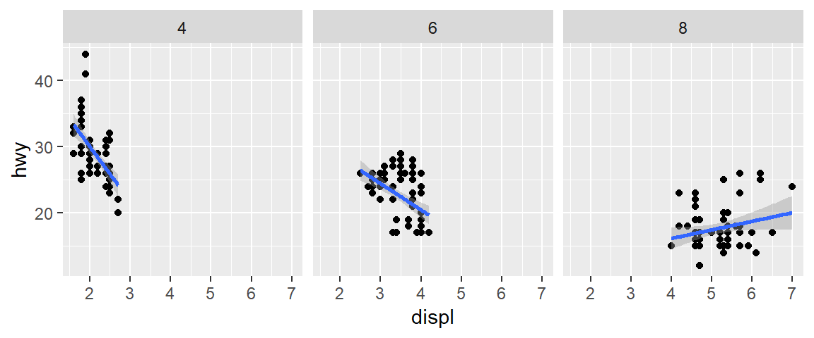
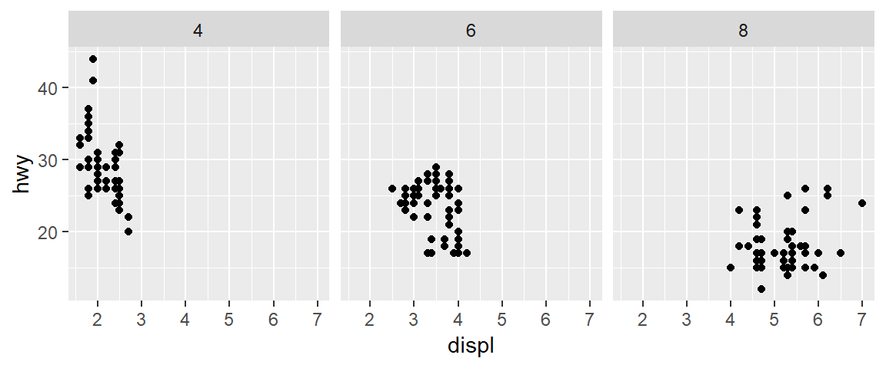
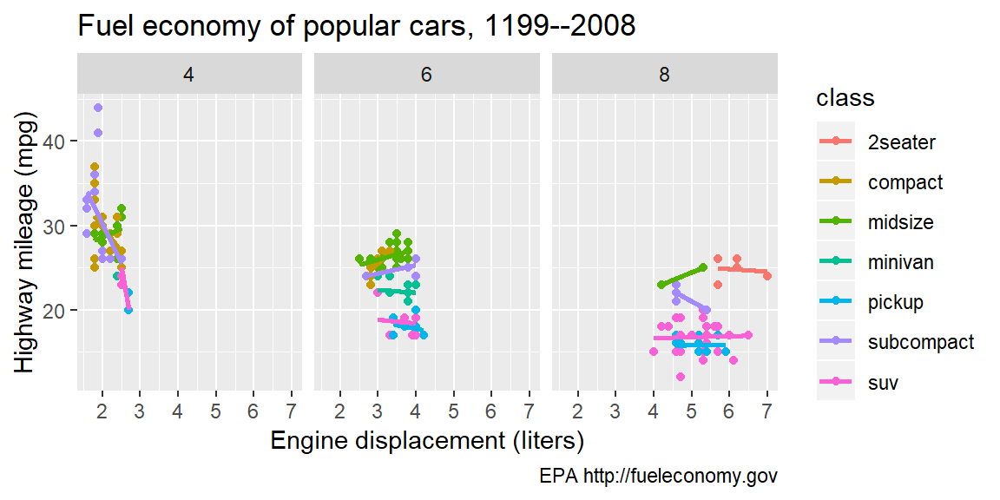
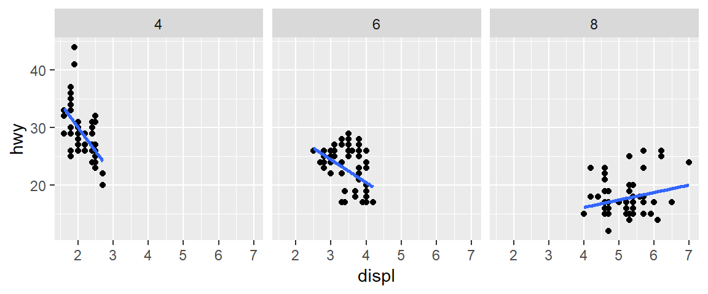
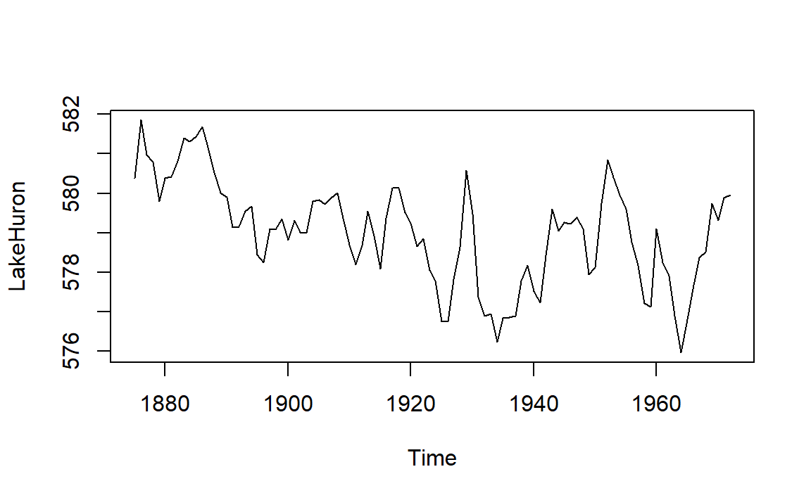

2018 FIE Workshop
Workshop conducted at the 2018 Frontiers in Education Conference (2018-10-03) in San Jose, CA.
The goal of the workshop is to share our data, methods, and metrics for intersectional research in student persistence. The workshop is designed for R beginners.
Pre-workshop setup
- Getting started for pre-workshop software installation instructions.
- Preface for an introduction to MIDFIELD and the workshop facilitators.
Description
The goal of the workshop is to make MIDFIELD more accessible to the FIE community via midfieldr. On completing the workshop, participants should be able to
- Describe key variables in the MIDFIELD data
- Select academic programs and populations to study
- Use R to compute and graph persistence metrics (e.g., graduation rate)
- Explain key features of effective data displays
- Continue using midfieldr to study additional persistence metrics
Participants should be sufficiently familiar with their operating systems to install software and navigate directories, but prior experience with R is not required. Workshop slides can be viewed on Speaker Deck.
Agenda
Workshop activities include active learning, discussion, and self-paced software tutorials. Our 3-hour agenda includes:
| Min | Topic |
|---|---|
| 10 | Introductions |
| 20 | Elements of effective graphs |
| 30 | Starting with R (tutorial) |
| 20 | Accessing the MIDFIELD data |
| 20 | — break — |
| 40 | Starting with midfieldr (tutorial) |
| 10 | Extending your repertoire |
| 10 | Next steps |
| 20 | Conversations |
Tutorial: Start with R
This is a self-paced tutorial.
- Don’t worry about the pace of your work.
- Everyone works and learns new material at a different pace.
- Please ask questions of your neighbors as well as the facilitators
- If you finish early, ask if anyone near you needs assistance
- Save your work regularly
1. Create an R project
Open RStudio.
- File > New Project > New Directory > New Project
- Fill in the Directory Name text box with 2018-FIE-midfieldr-workshop
- Select a location on your computer to save the project
- Check the Open in a new session box
- Click Create Project
The new project directory will be all of these things:
- a directory or “folder” on your computer
- an RStudio Project
On your computer, if you navigate to the new project folder, you should have at least the following folders and files,
2018-FIE-midfieldr-workshop/
|-- 2018-FIE-midfieldr-workshop.RprojAlways begin an R work session by opening the project’s Rproj file. Let’s practice:
- First, close all RStudio windows
- Navigate to the workshop folder you jst created
- Open
2018-FIE-midfieldr-workshop.Rproj
We work within an R project because it automatically sets project directory as the R working directory.
Set project options from the Tools pulldown menu
- Tools > Global Options
- Restore RData into workspace at startup: Uncheck this box
- Save workspace to RData on exit: Set to Never
Optional reading: To read all about R Projects, see the RStudio support page.
2. Create an R script
If you closed the project, then open 2018-FIE-midfieldr-workshop.Rproj
- File > New File > R Script
- An Untitled script will open
- File > Save As
- Type in a file name
start-with-R.R - Save
Your project main directory should now have these files,
2018-FIE-midfieldr-workshop/
|-- start-with-R.R
|-- 2018-FIE-midfieldr-workshop.RprojIn this workshop, all files we create will be saved in the main project folder, with no subdirectories. If you prefer to use subdirectories (folders) inside the project, that’s OK,
In the R file (not the Console), type
library(tidyverse)To run the script,
- Save
- Click the Run button to run a selected line or lines of code
- Click Source to run the entire script
Notes
- If you get an error statement that the package does not exist, you probably have to install the package.
- When the script runs correctly, you should see set of messages like this, where in this work, a double hashtag (
##) indicates R output.
## -- Attaching packages ------------------------------ tidyverse 1.2.1
## v ggplot2 3.0.0.9000 v purrr 0.2.5
## v tibble 1.4.2 v dplyr 0.7.6
## v tidyr 0.8.1 v stringr 1.3.1
## v readr 1.1.1 v forcats 0.3.0
## -- Conflicts --------------------------------------- tidyverse_conflicts()
## x dplyr::filter() masks stats::filter()
## x dplyr::lag() masks stats::lag()
Getting help: To see the help page for an R package or function, in your Console type a question mark followed by the object name, e.g.,
? tidyverse
? library3. Look at a tibble
The tidyverse comes with several data sets. We will use the one called mpg.
The help page for the data set tells us its source package and explains the variables. In the Console, type
7 ? mpg
To get a glimpse of the data, just type its name in the script and run it.
- In an R script, anything after a single hashtag is treated as a comment.
- Type the comment in your script.
- Type
mpgin your script and run it.
# mpg is a data frame included in the tidyverse package
mpg## # A tibble: 234 x 11
## manufacturer model displ year cyl trans drv cty hwy fl cla~
## <chr> <chr> <dbl> <int> <int> <chr> <chr> <int> <int> <chr> <ch>
## 1 audi a4 1.8 1999 4 auto~ f 18 29 p com~
## 2 audi a4 1.8 1999 4 manu~ f 21 29 p com~
## 3 audi a4 2 2008 4 manu~ f 20 31 p com~
## 4 audi a4 2 2008 4 auto~ f 21 30 p com~
## 5 audi a4 2.8 1999 6 auto~ f 16 26 p com~
## 6 audi a4 2.8 1999 6 manu~ f 18 26 p com~
## 7 audi a4 3.1 2008 6 auto~ f 18 27 p com~
## 8 audi a4 q~ 1.8 1999 4 manu~ 4 18 26 p com~
## 9 audi a4 q~ 1.8 1999 4 auto~ 4 16 25 p com~
## 10 audi a4 q~ 2 2008 4 manu~ 4 20 28 p com~
## # ... with 224 more rowsThe result tells us that the data has
- 234 observations (rows)
- 11 variables (columns)
- manufacturer is a variable of type “character”
- displ is a variable of type “double”
- year is a variable of type “integer”
Data frames are the most common way of storing data in R: a 2-dimensional data structure with columns of equal lengths. Columns can be of different types (numeric, character, logical, etc.) but all values in a column are the same type. Optional reading: Data frames.
In a tidy data frame, every column is a variable and every row is an observation. The mpg data is in tidy form.
The output above tells us that mpg is a tibble. Tibbles are data frames, but they tweak some older behaviors to make life a little easier. Optional reading: Tibbles.
4. Assignment operator
In R we assign values to objects with the assignment operator, <-. For example, suppose we want to assign the value \(\pi\) to the object \(x\). Type the following in your script and run it.
# an angle in radians
x <- piType the object name x to see it’s value. Type the following in your script and run it.
x## [1] 3.1415935. Functions
Functions are fundamental building blocks in R. Functions carry out specified tasks, typically operating on one or more arguments. For example, the cosine function, cos(), has one argument.
Type the following in your script and run it.
# above, x was assigned the value of pi radians
cos(x)## [1] -1A function from the tidyverse that we will use regularly is glimpse(). It gives us a useful glimpse of a data frame, showing all the variables (column names) but written down the page, and data runs across the page. making it possible to see every column in a data frame.
Type the following in your script and run it.
glimpse(mpg)## Observations: 234
## Variables: 11
## $ manufacturer <chr> "audi", "audi", "audi", "audi", "audi", "audi", "...
## $ model <chr> "a4", "a4", "a4", "a4", "a4", "a4", "a4", "a4 qua...
## $ displ <dbl> 1.8, 1.8, 2.0, 2.0, 2.8, 2.8, 3.1, 1.8, 1.8, 2.0,...
## $ year <int> 1999, 1999, 2008, 2008, 1999, 1999, 2008, 1999, 1...
## $ cyl <int> 4, 4, 4, 4, 6, 6, 6, 4, 4, 4, 4, 6, 6, 6, 6, 6, 6...
## $ trans <chr> "auto(l5)", "manual(m5)", "manual(m6)", "auto(av)...
## $ drv <chr> "f", "f", "f", "f", "f", "f", "f", "4", "4", "4",...
## $ cty <int> 18, 21, 20, 21, 16, 18, 18, 18, 16, 20, 19, 15, 1...
## $ hwy <int> 29, 29, 31, 30, 26, 26, 27, 26, 25, 28, 27, 25, 2...
## $ fl <chr> "p", "p", "p", "p", "p", "p", "p", "p", "p", "p",...
## $ class <chr> "compact", "compact", "compact", "compact", "comp...The general form of a function is
function_name(arg1 = value, arg2 = value, ... )6. Graphs
We use the ggplot() function from the tidyverse for creating graphs.
- Sometimes when clicking Source, a plot is not sent to the output. If that happens, select all the lines of code and press Run.
Type the following in your script and run it.
ggplot(data = mpg, mapping = aes(x = displ, y = hwy)) +
geom_point()
ggplot() arguments:
dataargument assigns the data frame
mappingargument assigns the aestheticsaes()functionxandyarguments assign variables from the data frame for graphing
+adds a new layer to the graphgeom_point()assigns points as the data markers
7. Saving results to a file
We can save any result to file, for example, to save the graph we just made as a PNG image, type the following in your script and run it.
ggsave("mileage.png")with a filename in quotes, here "mileage.png". To save a data frame as a CSV file, we use write_csv() (tidyverse). Type the following in your script and run it.
write_csv(mpg, "mpg_data.csv")where mpg is the data frame to be written and "mpg_data.csv" is the filename. Add these lines to your script and run it.
If you examine your project folder you will find the PNG and CSV files your just made. Your directory should look like this now,
2018-FIE-midfieldr-workshop/
|-- start-with-R.R
|-- mpg_data.csv
|-- mileage.png
|-- 2018-FIE-midfieldr-workshop.Rproj8. Small multiple graphs
We can use a 3rd variable from the data frame, the variable class, as a conditioning variable to create a set of small multiples (or facets). The new graph layer is created using the facet_wrap() function.
Type the following in your script and run it.
ggplot(data = mpg, mapping = aes(x = displ, y = hwy)) +
geom_point() +
facet_wrap(vars(class))
Or, instead of class, we could condition using the number of cylinders in the engine. Type the following in your script and run it.
ggplot(data = mpg, mapping = aes(x = displ, y = hwy)) +
geom_point() +
facet_wrap(vars(cyl))
9. filter() and the pipe operator
If we aren’t interested in 5-cylinder cars, we omit them from the data frame with the filter() function (tidyverse). Filter is a row-operation, keeping all rows that meet the conditional statement and removing all other rows. Here we’ll use the condition cyl != 5, that is, keep all rows for which the value of the cyl variable is not equal to 5 (! is the negation operator).
Type the following in your script and run it.
mpg_rev <- mpg %>%
filter(cyl != 5)I’ve also introduced the pipe operator %>% here. After assigning mpg to a new object mpg_rev, the pipe allows us to operate on the result mpg_rev and filter its rows, leaving the originalmpg data frame unaltered.
Thus, the pipe operator can be thought of as a “then” statement. Do this, “then” use the result and perform the next operation.
The same graph with the revised data frame has only three facets. The nrow = 1 argument places the panels in one row.
Type the following in your script and run it.
ggplot(data = mpg_rev, mapping = aes(x = displ, y = hwy)) +
geom_point() +
facet_wrap(vars(cyl), nrow = 1)
10. Smooth curve
Adding the geom_smooth() layer adds a loess curve (a local regression) to each panel.
Type the following in your script and run it.
ggplot(data = mpg_rev, mapping = aes(x = displ, y = hwy)) +
geom_point() +
facet_wrap(vars(cyl), nrow = 1) +
geom_smooth()
If we want to try a linear regression , add the argument method - "lm". Type the following in your script and run it.
ggplot(data = mpg_rev, mapping = aes(x = displ, y = hwy)) +
geom_point() +
facet_wrap(vars(cyl), nrow = 1) +
geom_smooth(method = "lm")The shaded area around the regression is the confidence interval. We can remove it using the argument se = FALSE. Type the following in your script and run it.
ggplot(data = mpg_rev, mapping = aes(x = displ, y = hwy)) +
geom_point() +
facet_wrap(vars(cyl), nrow = 1) +
geom_smooth(method = "lm", se = FALSE)
11. Labels
We can change the axis labels and add a title (above the figure) and a caption (below the figure) using the labs() layer. Type ? mpg in the Console to find out that the engine displacement is in liters.
Type the following in your script and run it.
ggplot(data = mpg_rev, mapping = aes(x = displ, y = hwy)) +
geom_point() +
facet_wrap(vars(cyl), nrow = 1) +
geom_smooth(method = "lm", se = FALSE) +
labs(x = "Engine displacement (liters)",
y = "Highway mileage (mpg)",
title = "Fuel economy of popular cars, 1199--2008",
caption = "EPA http://fueleconomy.gov")
12. Wrap-up
This concludes our brief introduction to R. You learned to
- Create an R project
- Create an R script
- Save and run an R script
Regarding R syntax you should be able to
- Describe a data frame
- Describe the attributes of a tidy data frame
- Use the assignment operator
- Describe basic components of an R function
- Draw a simple scatterplot
- Create small multiples
- Add a smooth loess curve to a graph
- Add a linear regression to a graph
- Save a graph as a PNG file
- Save a data frame as a CSV file
Tutorial: Start with midfieldr
This is a self-paced tutorial illustrating functions in the midfieldr package.
- Don’t worry about the pace of your work.
- Everyone works and learns new material at a different pace.
- Please ask questions of your neighbors as well as the facilitators
- If you finish early, ask if anyone near you needs assistance
- Save your work regularly
Create a new R script
If you closed the project, then open 2018-FIE-midfieldr-workshop.Rproj
- File > New File > R Script
- An Untitled script will open
- File > Save As
- Type in a new file name, for example,
start-with-midfieldr.R - Save
Your directory should look like this now,
2018-FIE-midfieldr-workshop/
|-- start-with-midfieldr.R
|-- start-with-R.R
|-- mpg_data.csv
|-- mileage.png
|-- 2018-FIE-midfieldr-workshop.Rproj When you navigate to the tutorial website, you will
- Follow the instructions, adding lines of code to your new script
- Run the script after adding each line of code
- The URL is https://midfieldr.github.io/midfieldr/index.html
- Select the Getting started tab
- Scroll down to Select programs to study
Acknowledgements
Our sincere thanks to our “R-bar” volunteers Hossein Ebrahiminejad and Matt Scheidt, without whom the software tutorials could not have as smoothly as they did.
References
Eddelbuettel, Dirk, and Ista Zahn. 2018. Binb: ’Binb’ Is Not ’Beamer’. https://CRAN.R-project.org/package=binb.
Mount, John. 2018. Seplyr: Improved Standard Evaluation Interfaces for Common Data Manipulation Tasks. https://CRAN.R-project.org/package=seplyr.
Wickham, Hadley. 2017. Tidyverse: Easily Install and Load the ’Tidyverse’. https://CRAN.R-project.org/package=tidyverse.
Xie, Yihui. 2018. Knitr: A General-Purpose Package for Dynamic Report Generation in R. https://CRAN.R-project.org/package=knitr.